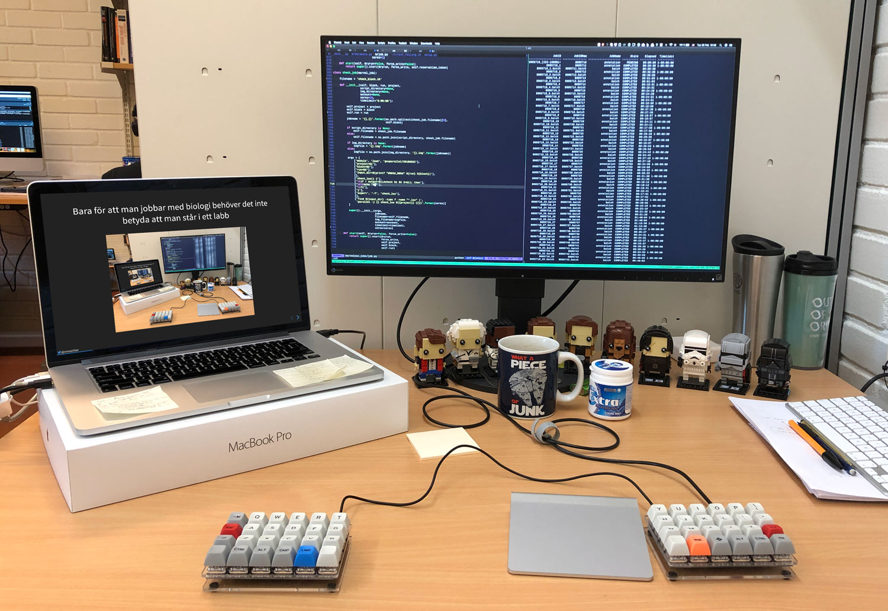
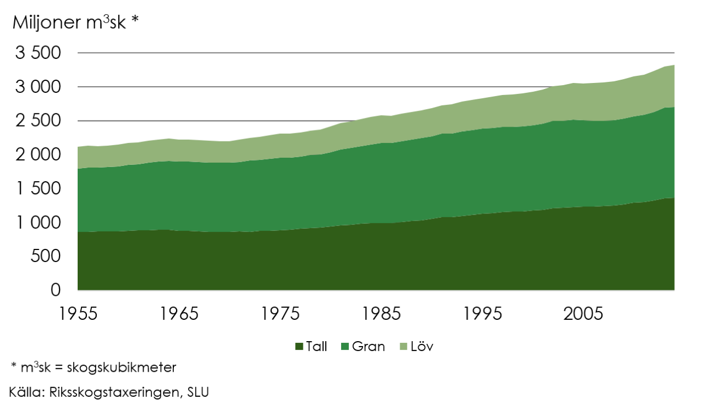
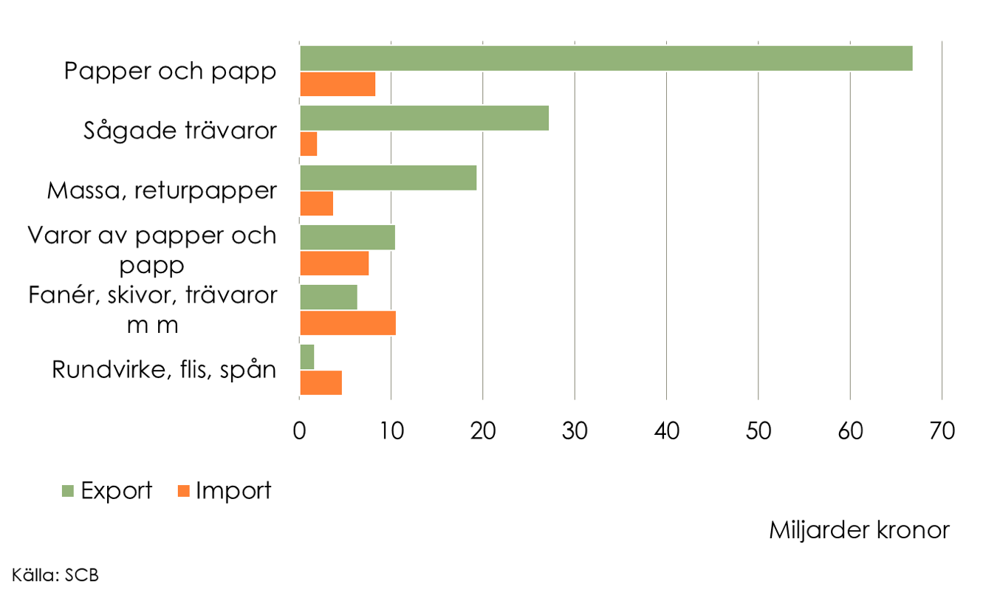
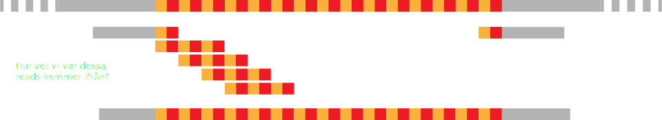

Genomanalys av gran och tall
Niklas Mähler
2019-02-28
Översikt
- Hur jag hamnade här
- Genomsekvensering
- Varför gran och tall
- Genomassembly
- Genomisk selektion
Hur jag hamnade här
Min historia
- Graninge, Ångermanland
- Rymdgymnasiet, Kiruna
- Lumpen, Halmstad/Karlskrona
- Bioteknik och genomik, Umeå universitet
- Doktorand i bioinformatik, Ås, Norge


Bioinformatik
- Analys av biologiska data
- Statistik
- Programmering
- Biologi
Bara för att man jobbar med biologi behöver det inte betyda att man står i ett labb
Genomsekvensering
Vad är ett genom?
DNA
- 4 baser:
- Adenin
- Cytosin
- Guanin
- Tyrosin
Mellan generna då?
- Regulatoriska element
- Repetitiva sekvenser
- Skräp-DNA?
Vad är genomsekvensen bra för?
- Kartläggning av gener
- Genuttrycksanalys
- Populationsanalyser
- Genomisk selektion
Steg
- Samla in material
- Extrahera DNA
- Sekvensera
Kort historik
| År | Organism | Gener | Storlek |
|---|---|---|---|
| 1977 | Bakteriofag ΦX174 | 11 | 5400 bp |
| 1984 | Eppstein—Barr–virus | 85 | 172 kbp |
| 1996 | Saccharomyces cerevisiae | 6300 | 12 Mbp |
| 1998 | Caenorhabditis elegans | 19000 | 100 Mbp |
| 2000 | Arabidopsis thaliana | 25000 | 135 Mbp |
| 2001 | Homo sapiens | 20000 | 3.2 Gbp |
| 2006 | Populus trichocarpa | 45000 | 550 Mbp |


Tekniken har förbättrats och priserna pressats

Tredje generationens sekvensering
- Långa avläsningar (reads).
- Läser av enskilda molekyler.
- Pacific Biosciences (PacBio).
- Single molecule real-time (SMRT) sequencing.
Varför gran och tall?


Några av de viktigaste växterna i Sverige
Står för 10% av Sveriges totala export
Stort antal försöksodlingar
Stort antal försöksodlingar
Ren nyfikenhet
- Granens genom har ca 20 miljarder baspar
- Människan har 3 miljarder baspar
- Mer eller mindre samma antal gener
- En av de äldsta organismerna på jorden
- Hur?
Genomassembly
Ett försök att representera en genomsekvens med ett stort antal mycket kortare sekvenser.
Ett stort, komplicerat pussel
- Flera pussel med samma motiv
- Samma bild, men inte identiska bitar
- Bitar som saknas
- Bitar från helt andra pussel
- Och du får inte använda kartongen
Repetitiva regioner
En av detaljerna som gör gran till en utmaning: ~80%
Problemet med repetitiva regioner
Verktyg
Finns ett stort antal program för genomassembly.
Vilket ska man välja?
Det beror på…
MARVEL
- Utvecklades för axolotl-genomet.
- 32 Gbp och liknande andel repetitivt innehåll.

UPPMAX
Superdator i Uppsala
- Kluster: Rackham
- 486 noder
- Två 10-kärniga processorer på 2.2 GHz var
- Minne:
- 450: 128 GB
- 32: 256 GB
- 4: 1 TB
Beräkningar fram till i dag
- Ungefär halvvägs.
- 2 miljoner CPU-timmar
- 1 PB diskutrymme
Genomisk selektion
Klimatförändringar ställer till det
Vi måste få fram träd som klarar av t.ex. torka
Granens generationstid är lång
20–25 år innan en gran blommar.
Kommer att ta längre tid att ta fram nya gransorter än vad det tar för klimatet att förändras.
Somatisk embryogenes kan korta generationstiden
Framställa embryon från vegetativa celler.

Koppla fenotyper till genomet
Om vi kan koppla en fenotyp till en eller flera områden i genomet kan vi redan på fröstadiet bestämma om ett träd kommer att få rätt egenskaper.
Saker att tänka på
- Se upp för komplexa interaktioner som kan vara svåra att testa.
- Kan vi vara säkra på att det inte är något som vi inte tagit hänsyn till som påverkar fenotypen?

Tack för mig!
Om ni har andra frågor kan ni kontakta mig på Twitter eller skicka ett mail till niklas.mahler@umu.se